Lab5_Modeling Latches and Flip-flops
Introduction
Sequential circuits are digital circuits in which the output depends not only on the present input (like combinatorial circuits) but also on the past sequence of inputs. In effect, these circuits must be able to remember something about the history of the inputs. Thus, the timing concept is introduced, and the clock signal provides the timing essence to the sequential circuits. Latches and flip-flops are commonly used memory devices in sequential circuits.
Latches
Storage elements can be classified into latches and flip-flops. Latch is a device with precisely two stable states: high-output and low-output. A latch has a feedback path so that the device can retain information. Therefore, latches are volatile memory devices that can store one bit of data for as long as the device is powered. As the name suggests, latches are used to “latch onto” information and hold it in place.
An SR latch (Set/Reset) is an asynchronous device: it works independently of control signals and relies only on the state of the S and R inputs. The symbol, the circuit using NOR gates, and the truth table are shown below.
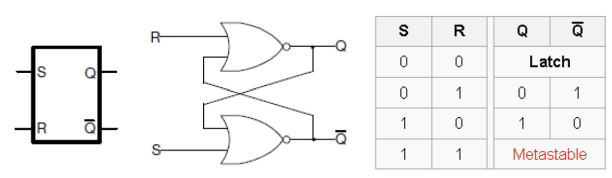
Though Xilinx FPGAs can implement such a latch using one LUT (Look-Up Table) circuit, the following Verilog code shows how such a circuit can be modeled using Gate-level and dataflow modeling.
module SR_latch_gate (input R, input S, output Q, output Qbar);
nor (Q, R, Qbar);
nor (Qbar, S, Q);
endmodule
module SR_latch_dataflow (input R, input S, output Q, output Qbar);
assign #2 Q_i = Q;
assign #2 Qbar_i = Qbar;
assign #2 Q = ~ (R | Qbar);
assign #2 Qbar = ~ (S | Q);
endmodule
Part5-1-1
Design an SR latch by using the code shown above. Synthesize the design and view the schematic of the synthesized design. Develop a testbench to test (see waveform below) and validate the design. Simulate the design. Assign S input to BTN0 and R input to BTN1. Assign Q to LED0 and Qbar to LED1. Implement the design and verify the functionality of the hardware.
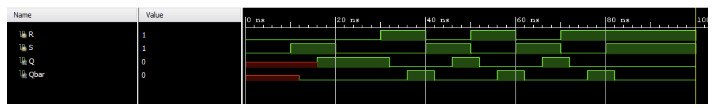
- View the schematic of the synthesized design
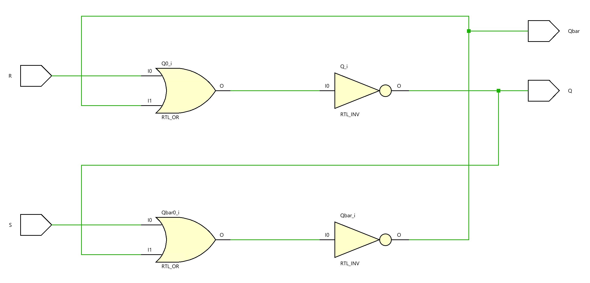
- Develop a testbench to test (see waveform above), perform behavioral simulation for 100ns, and validate the design.
tb.v
module rs_flipflop_tb;
// Inputs
reg R;
reg S;
// Outputs
wire Q;
wire Qbar;
// Instantiate the Unit Under Test (UUT)
SR_latch_dataflow uut (
.R(R),
.S(S),
.Q(Q),
.Qbar(Qbar)
);
initial begin
// Initialize Inputs
R = 0;
S = 0;
// Apply test vectors
#10; // Wait for 10ns
S = 1; // Set
#10;
S = 0; // Release Set
#10;
R = 1; // Reset
#10;
R = 0; // Release Reset
S = 1; // Set again
#10;
R = 1;
S = 0;
#10;
R = 0;
S = 1;
#10;
R = 1;
S = 0;
#10;
S = 1;
#20;
// Finish the simulation
$finish;
end
initial begin
// Monitor changes in signals
$monitor("Time=%t | R=%b, S=%b | Q=%b, Qbar=%b", $time, R, S, Q, Qbar);
end
endmodule
We can run a Simulation to check the code by clicking the Run Simulation under the SIMULATION and choosing the first Run Behavioral Simulation.
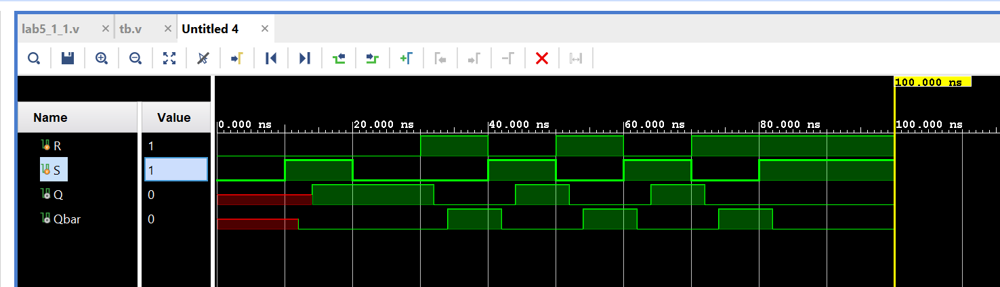
Part5-1-2
In some situations, it may be desirable to dictate when the latch can and cannot latch. The gated SR latch is a simple extension of the SR latch, which provides an Enable line that must be driven high before data can be latched. Even though a control line is now required, the SR latch is not synchronous because the inputs can change the output even in the middle of an enable pulse. When the Enable input is low, the outputs from the AND gates must also be low. Thus, the Q and bar Q outputs remain latched to the previous data. Only when the Enable input is high can the state of the latch change, as shown in the truth table. When the enable line is asserted, a gated SR latch is identical in operation to an SR latch. The Enable line is sometimes a clock signal but is usually a read or writes strobe. The symbol, circuit, and truth table of the gates SR latch are shown below.
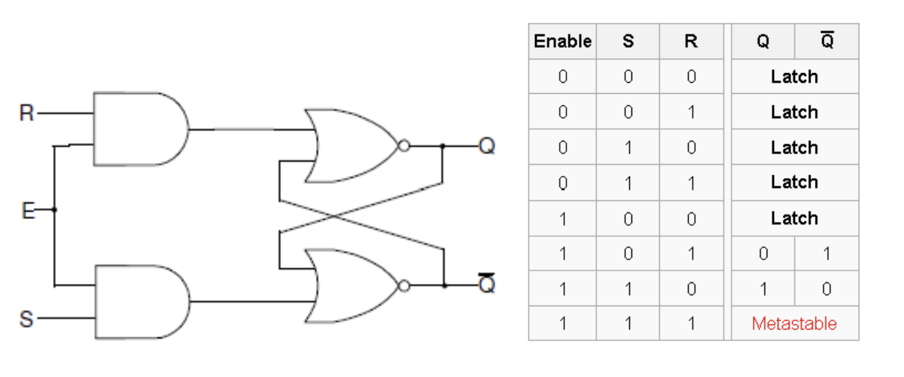
Design a gated SR latch (shown in the figure above) using dataflow modeling. Synthesize the design and view the schematic of the synthesized design. Develop a testbench to test (generate input as shown below) and validate the design. Simulate the design. Assign S input to BTN0, R input to BTN1, and Enable input to BTN2. Assign Q to LED0 and Qbar to LED1. Implement the design and verify the functionality of the hardware.
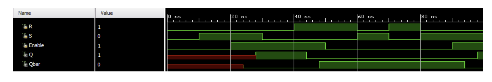
lab5_1_2.v
module gated_sr_latch_dataflow(
input wire R,
input wire S,
input wire E,
output wire Q,
output wire Qbar
);
assign Q = ~ ((R & E)|Qbar);
assign Qbar = ~ ((S & E)|Q);
endmodule
- View the schematic of the synthesized design
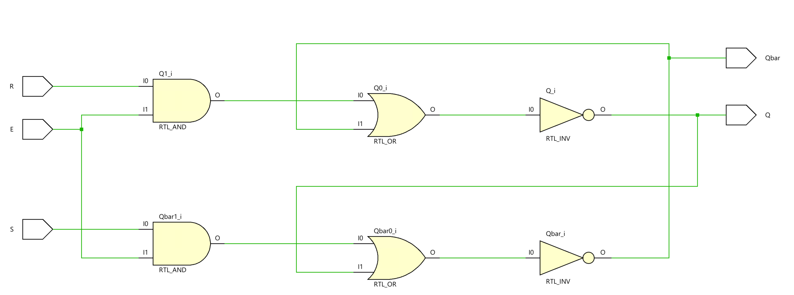
- Develop a testbench to test (see waveform above), perform behavioral simulation for 100ns, and validate the design.
tb.v
module tb;
// Inputs
reg R; // Reset input
reg S; // Set input
reg E; // Enable input
// Outputs
wire Q; // Output of the latch
wire Qbar; // Complement of the output
// Instantiate the Unit Under Test (UUT) with the gated SR latch model
gated_sr_latch_dataflow uut (
.R(R),
.S(S),
.E(E),
.Q(Q),
.Qbar(Qbar)
);
initial begin
// Initialize Inputs to default state (inactive)
R = 0;
S = 0;
E = 0;
// Sequentially apply test vectors with timing delays to simulate latch behavior
// Attempt to set the latch without enabling - should have no effect
#10; S = 1; // Apply set input
// Enable the latch, allowing the set action to take effect
#10; E = 1; // Enable the latch
// Reset the latch
#10; S = 0; // Remove set input
#10; R = 1; // Apply reset input
// Reset the enable to check latch remains in the last state when disabled
#10; E = 0; // Disable the latch
// Toggle inputs to further test latch functionality
#10; R = 0; S = 1; // Set attempt without enable
#10; R = 1; S = 0; // Reset attempt without enable
#10; R = 0; S = 1; // Another set attempt without enable
// Note: $finish is commented out to allow the simulation to run indefinitely or be manually stopped.
// $finish; // Uncomment to terminate simulation automatically
end
// Monitor changes on input and output signals and display them
initial begin
$monitor("Time=%t | R=%b, S=%b, E=%b| Q=%b, Qbar=%b", $time, R, S, E, Q, Qbar);
end
endmodule
We can run a Simulation to check the code by clicking the Run Simulation under the SIMULATION and choosing the first Run Behavioral Simulation.
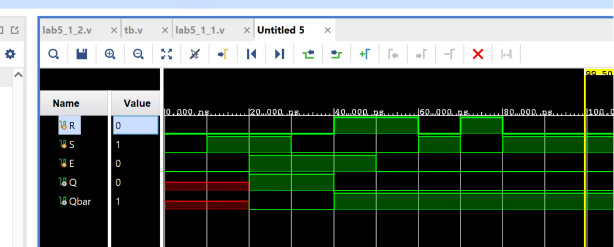
- Add the appropriate board-related master XDC file to the project and edit it to include the related pins, assigning S input to BTN0, R input to BTN1 E input to BTN2, Q to LED0, and Qbar to LED1.
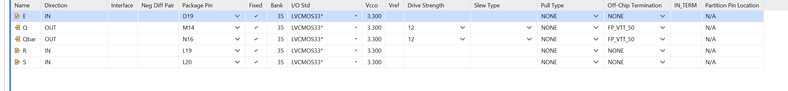
For the constraints file, please add the code as below:
# Map the reset input R to pin L19 and set its I/O standard to 3.3V LVCMOS
set_property PACKAGE_PIN L19 [get_ports R]
set_property IOSTANDARD LVCMOS33 [get_ports R]
# Map the set input S to pin L20 and set its I/O standard to 3.3V LVCMOS
set_property PACKAGE_PIN L20 [get_ports S]
set_property IOSTANDARD LVCMOS33 [get_ports S]
# Map the output Q to pin M14 and set its I/O standard to 3.3V LVCMOS
set_property PACKAGE_PIN M14 [get_ports Q]
set_property IOSTANDARD LVCMOS33 [get_ports Q]
# Map the complementary output Qbar to pin N16 and set its I/O standard
set_property PACKAGE_PIN N16 [get_ports Qbar]
set_property IOSTANDARD LVCMOS33 [get_ports Qbar]
# Map the enable input E to pin D19 and set its I/O standard to 3.3V LVCMOS
set_property PACKAGE_PIN D19 [get_ports E]
set_property IOSTANDARD LVCMOS33 [get_ports E]
# Allow combinational loops for Q and Qbar outputs, acknowledging potential design risks
set_property ALLOW_COMBINATORIAL_LOOPS TRUE [get_nets Q_OBUF]
set_property ALLOW_COMBINATORIAL_LOOPS TRUE [get_nets Qbar_OBUF]
Generate the bitstream and program device like Lab1.
Then you can press the button on the board, and you can see the LED is on like below:
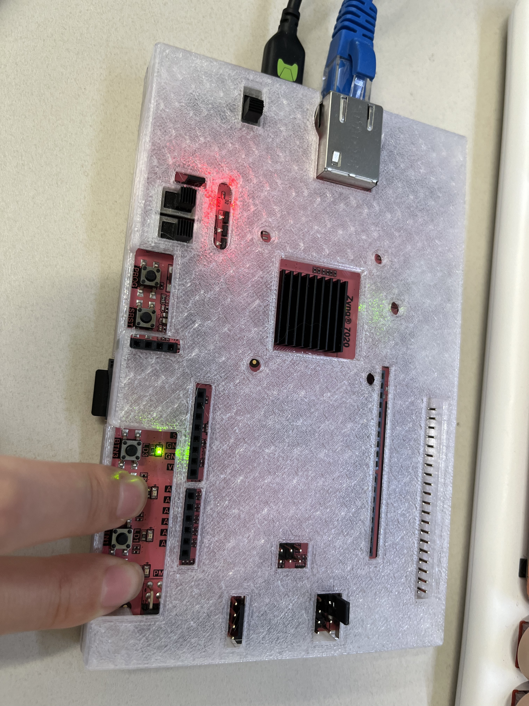
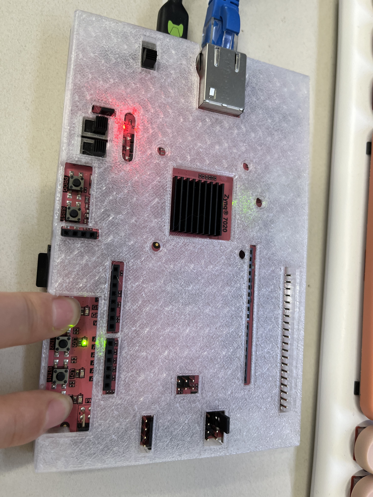
Part5-1-3
The D latch (D for “data”) or transparent latch is a simple extension of the gated SR latch that removes the possibility of invalid input states (metastability). Since the gated SR latch allows us to latch the output without using the S or R inputs, we can remove one of the inputs by driving both the Set and Reset inputs with a complementary driver, i.e. we remove one input and automatically make it the inverse of the remaining input. The D latch outputs the D input whenever the Enable line is high. Otherwise, the output is whatever the D input was when the Enable input was last high. This is why it is also known as a transparent latch - when Enable is asserted, it is said to be “transparent” - its signals propagate directly through it as if it isn’t there.
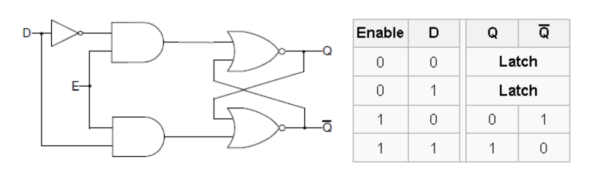
D-latches can be modeled using behavioral modeling, as shown below.
module D_latch_behavior (input D, input Enable, output reg Q, output reg Qbar);
always @ (D or Enable)
if(Enable)
begin
Q <= D;
Qbar <= ~D;
end
endmodule
- View the schematic of the synthesized design
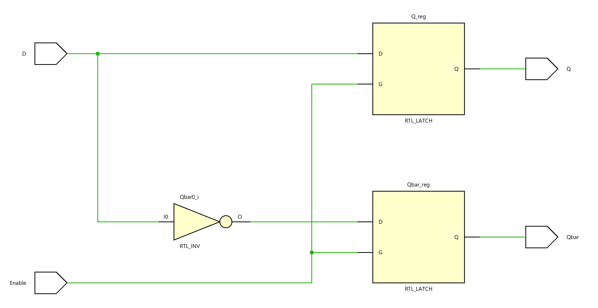
Note that since we do not say what to do when Enable is low, the circuit “remembers” the previous state. While Enable is high and since the always block is also sensitive to D, Q and Qbar will be updated whenever D changes, giving it a “transparent” behavior. Also note that the non-blocking assignment operator (<=) is used instead of the blocking (=) operator, which had been used in dataflow modeling. The distinction between the blocking and non-blocking assignment is covered in Lab 7 (Testbenches for Sequential Circuits).
Design a D latch (shown in the figure above) using dataflow modeling. Synthesize the design and view the schematic of the synthesized design. Develop a testbench to test (generate input as shown below) and validate the design. Simulate the design. Assign D input to BTN0 and Enable input to BTN1. Assign Q to LED0 and Qbar to LED1. Implement the design and verify the functionality of the hardware.
lab5_1_3.v
module D_latch_dataflow(
input wire D, // Data input for the D Latch
input wire E, // Enable input for the D Latch
output wire Q, // Output of the D Latch
output wire Qbar // Complement (inverse) of the output Q
);
// The Q output assignment. The latch is transparent when E is high, and D is passed through to Q.
// When E is low, the latch holds its value because of the feedback through Qbar.
// The logic ensures that Q is the inverse of the input when E is high, considering the current state of Qbar for holding the value.
assign Q = ~((~D & E) | Qbar);
// The Qbar output assignment is similar to Q but uses the complement of D.
// This ensures that Qbar holds the opposite value of Q, creating the necessary feedback loop for the latch functionality.
// The feedback through Q helps maintain the current state when E is low.
assign Qbar = ~((D & E) | Q);
endmodule
- View the schematic of the synthesized design
- Develop a testbench to test (see waveform above), perform behavioral simulation for 100ns, and validate the design.
tb.v
module tb;
// Inputs for the D Latch
reg D; // Data input
reg E; // Enable input
// Outputs from the D Latch
wire Q; // Output of the latch
wire Qbar; // Inverted output of the latch
// Instantiate the Unit Under Test (UUT) with the D Latch model
D_latch_dataflow uut (
.D(D),
.E(E),
.Q(Q),
.Qbar(Qbar)
);
initial begin
// Initialize Inputs to default state
D = 0; // Data input set to 0
E = 0; // Enable input set to 0
// Sequentially apply test vectors to simulate the D Latch behavior
#10; // Wait for 10ns
D = 1; // Change data input to 1
#10;
E = 1; // Enable the latch
#10;
D = 0; // Change data input to 0
#10;
D = 1; // Change data input back to 1
#10; // Wait for 10ns, at 50ns from start
D = 1; // Ensure data input remains at 1
E = 0; // Disable the latch
#10; // At 60ns from start
D = 0; // Change data input to 0
#10;
D = 1; // Change data input to 1
#10; // At 80ns from start
D = 0; // Change data input to 0 again
#10;
E = 1; // Enable the latch
#10;
D = 1; // Change data input to 1
#10;
D = 0; // Finally, change data input back to 0
// Note: $finish; is commented out to allow for manual termination of the simulation if needed.
// $finish; // Uncomment to terminate the simulation automatically
end
// Monitor block to watch and display changes on the D Latch inputs and outputs
initial begin
$monitor("Time=%t | D=%b, E=%b| Q=%b, Qbar=%b", $time, D, E, Q, Qbar);
end
endmodule
We can run a Simulation to check the code by clicking the Run Simulation under the SIMULATION and choosing the first Run Behavioral Simulation.
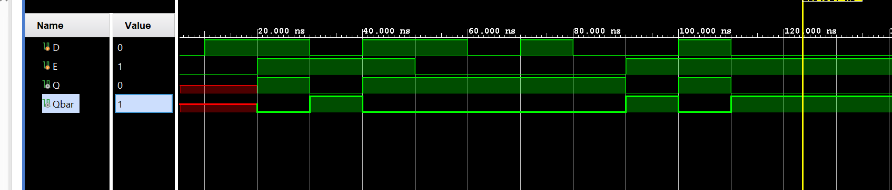
- Add the appropriate board-related master XDC file to the project and edit it to include the related pins, assigning S input to BTN0, R input to BTN1, Q to LED0, and Qbar to LED1.
Flip-flops
Flip-flops are clocked circuits whose output may change on an active edge of the clock signal based on its input. Unlike latches, which are transparent and in which output can change when the gated signal is asserted upon the input change, flip-flops normally would not change the output upon input change even when the clock signal is asserted. Flip-flops are widely used in synchronous circuits.
The D flip-flop is a widely used type of flip-flop. It is also known as a data or delay flip-flop. The D flip-flop captures the value of the D-input at a definite portion of the clock cycle (such as the rising edge of the clock). That captured value becomes the Q output. At other times, the output Q does not change. The D flip-flop can be viewed as a memory cell or a delay line. The active edge in a flip-flop could be rising or falling. The following figure shows a rising (also called positive) edge-triggered D flip-flop and a falling (negative edge) triggered D flip-flop.
The positive edge triggered D flip-flop can be modeled using behavioral modeling as shown below.
module D_ff_behavior (input D, input Clk, output reg Q);
always @ (posedge Clk)
if(Clk)
begin
Q <= D;
end
endmodule
Note that the always block is sensitive to the rising edge on the Clk signal. When a change (event) on the sensitive signal occurs, the statements in the if block will be executed. The posedge sensitivity enables the flip-flop behavior. For the falling edge sensitivity, use attribute negedge.
Part5-2-1
Model a D flip-flop using behavioral modeling. Develop a testbench to validate the model (see diagram below). Simulate the design.
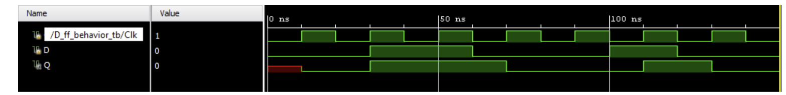
lab5_2_1.v
module D_ff(
input d,
input clk,
output reg q);
always @(posedge clk)
begin
q <= d;
end
endmodule
- View the schematic of the synthesized design
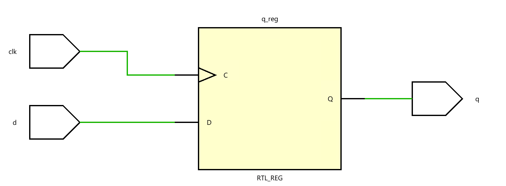
- Develop a testbench to test (see waveform above), perform behavioral simulation for 100ns, and validate the design.
tb.v
module D_ff_tb;
// Inputs
reg d;
reg clk;
// Outputs
wire q;
// Instantiate the Unit Under Test (UUT)
D_ff uut (
.clk(clk),
.d(d),
.q(q)
);
initial begin
// Initialize Inputs
clk = 0;
d = 0;
#50;
d = 1;
#30;
d = 0;
#40;
d = 1;
#20;
d <=0;
end
always #10 clk = ~ clk;
endmodule
We can run a Simulation to check the code by clicking the Run Simulation under the SIMULATION and choosing the first Run Behavioral Simulation.
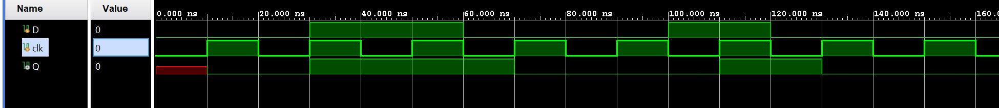
Part5-2-2
The following circuit and timing diagrams illustrate the differences between D-latch, rising edge triggered. D flip-flop and falling edge triggered D flip-flops.
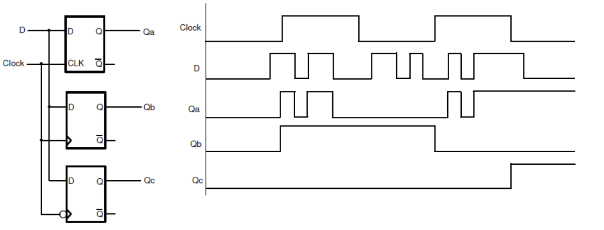
lab5_2_2.v
module compare_D_DFF(
input wire clk, // Clock input
input wire D, // Data input
output reg Qa, // Output of D-latch
output reg Qb, // Output of rising edge triggered D flip-flop
output reg Qc // Output of falling edge triggered D flip-flop
);
// D-latch (level-sensitive)
always @(clk or D) begin
if (clk) // Assuming a high level for latch enable
Qa <= D;
end
// Rising edge triggered D flip-flop
always @(posedge clk) begin
Qb <= D;
end
// Falling edge triggered D flip-flop
always @(negedge clk) begin
Qc <= D;
end
endmodule
- View the schematic of the synthesized design
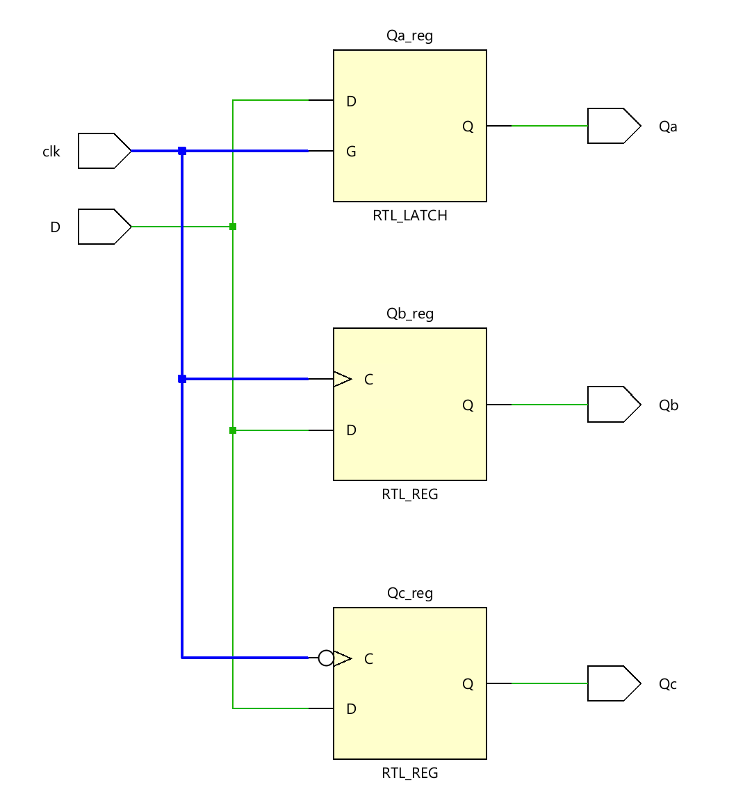
- Develop a testbench to test (see waveform above), perform behavioral simulation for 100ns, and validate the design.
tb.v
module tb;
// Inputs
reg D;
reg clk;
// Outputs
wire Qa;
wire Qb;
wire Qc;
// Instantiate the Unit Under Test (UUT)
compare_D_DFF uut (
.clk(clk),
.D(D),
.Qa(Qa),
.Qb(Qb),
.Qc(Qc)
);
initial begin
// Initialize Inputs
D = 0;
clk = 0;
#28;
D = 1;
#5;
D = 1;
#1;
D = 0;
#3;
D = 1;
#2;
D = 0;
#2;
D =1;
#3;
D =0;
#12;
D = 1;
#10;
D = 0;
#2;
end
always #10 clk = ~ clk;
endmodule
We can run a Simulation to check the code by clicking the Run Simulation under the SIMULATION and choosing the first Run Behavioral Simulation.
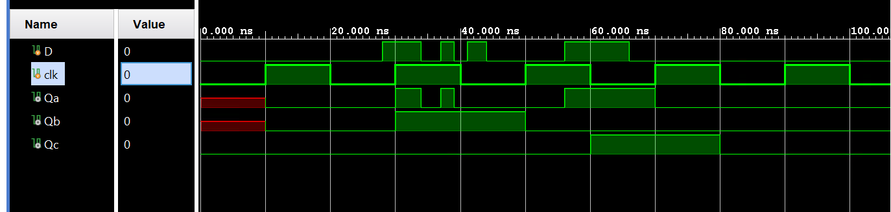
Part5-2-3
Often, it is necessary to have the synchronous element start with a defined output. In some circuits, it is also desired and required to force the synchronous element to a known output, ignoring input at the D input. The D flip-flop discussed above can be modified to have such functionality. Such a D flip-flop is known as a D flip-flop with synchronous set and reset capabilities if the desired output is obtained on the active edge of the clock; otherwise, it is viewed as having an asynchronous preset and clear. The models of each kind are shown below.
module D_ff_with_synch_reset_behavior(input D, input Clk, input reset, output
reg Q);
always @(posedge Clk)
if (reset)
begin
Q <= 1'b0;
end else
begin
Q <= D;
end
endmodule
module D_ff_with_asynch_reset_behavior(input D, input Clk, input clear,
output reg Q);
always @(posedge Clk or posedge clear)
if (clear)
begin
Q <= 1'b0;
end else
begin
Q <= D;
end
endmodule
Model the D flip-flop with synchronous reset using behavioral modeling. Develop a testbench to test (generate input as shown) and validate the design. Simulate the design.
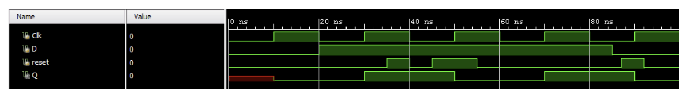
lab5_2_3.v
module Dff_sync_reset(
input d,
input clk,
input rstn,
output reg q);
always @(posedge clk)
begin
if(rstn)
q<= 0;
else
q <= d;
end
endmodule
- view the schematic of the synthesized design
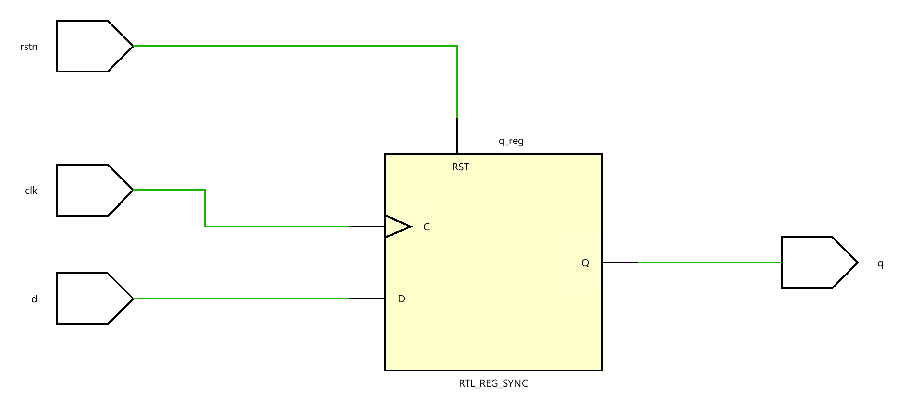
- Develop a testbench to test (see waveform above), perform behavioral simulation for 100ns, and validate the design.
tb.v
module tb;
reg D;
reg clk;
reg rstn;
// Outputs
wire q;
// Instantiate the Unit Under Test (UUT)
Dff_sync_reset uut (
.clk(clk),
.d(D),
.rstn(rstn),
.q(q)
);
initial begin
// Initialize Inputs
D <= 0;
clk <= 0;
rstn <= 0;
#20;
D <= 1;
#5;
rstn <= 1;
#3;
rstn <= 0;
#3;
rstn <= 1;
#17;
rstn <= 0;
#15;
rstn <= 1;
#8;
rstn <= 0;
end
always #10 clk = ~ clk;
endmodule
We can run a Simulation to check the code by clicking the Run Simulation under the SIMULATION and choosing the first Run Behavioral Simulation.
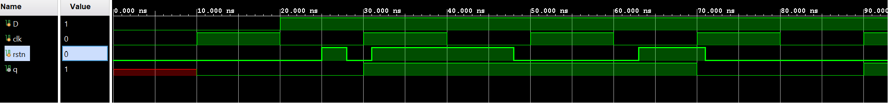
Verify the design in hardware. Assign D input to BTN0, reset to BTN3, Clk to H16, and output Q to LED0. And you can see the more information about the Pin layout
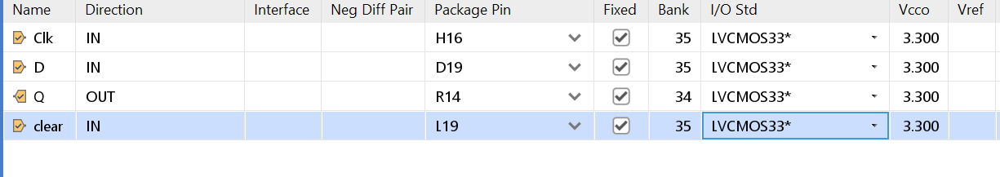
Part5-2-4
In FPGA, LUT and FF are located in different configurable logic blocks (CLB) and are connected using routing resources. During implementation, the tools will use these resources depending on how the circuits are modeled, the type and amount of resources required, and the speed at which the circuit will be driven. Often, resources for exchanging information are placed close to each other; however, there can be a situation when it may not be possible. When related flip-flops, between which the information gets exchanged, are placed away from each other, the clocks arriving at the source and destination flip-flops may not be simultaneously, creating what is called clock-skew. The clock skew can alter the behavior of the circuit. In some other cases, certain flip-flops may not need to update their output at every asserted clock edge. Flip-flops in FPGA have an additional control signal called Clock Enable (CE) to control the behavior. In ASIC technology, gated clocks are used to control the behavior. A symbol of the flip-flop with CE is shown below.
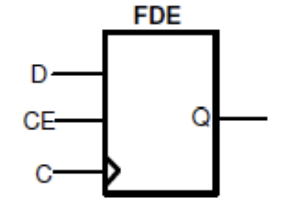
module D_ff_with_ce_behavior(input D, input Clk, input ce, output reg Q);
always @(posedge Clk)
if (ce)
Q <= D;
endmodule
module D_ff_with_ce_and_synch_reset_behavior(input D, input Clk, input reset,
input ce, output reg Q);
always @(posedge Clk)
if (reset)
begin
Q <= 1'b0;
end else if (ce)
begin
Q <= D;
end
endmodule
Model the D flip-flop with synchronous reset and clock enabled using behavioral modeling. Develop a testbench to test (generate input as shown) and validate the design. Simulate the design.
lab5_2_4.v
module d_ff_sync_reset_en(
input wire clk,
input wire rst,
input wire en,
input wire d,
output reg q
);
// Behavioral modeling of the D flip-flop
always @(posedge clk) begin
if (rst) begin
q <= 0; // Reset the output when rst is high
end else if (en) begin
q <= d; // Capture the input when en is high
end
// No change to the output when en is low
end
endmodule
- view the schematic of the synthesized design
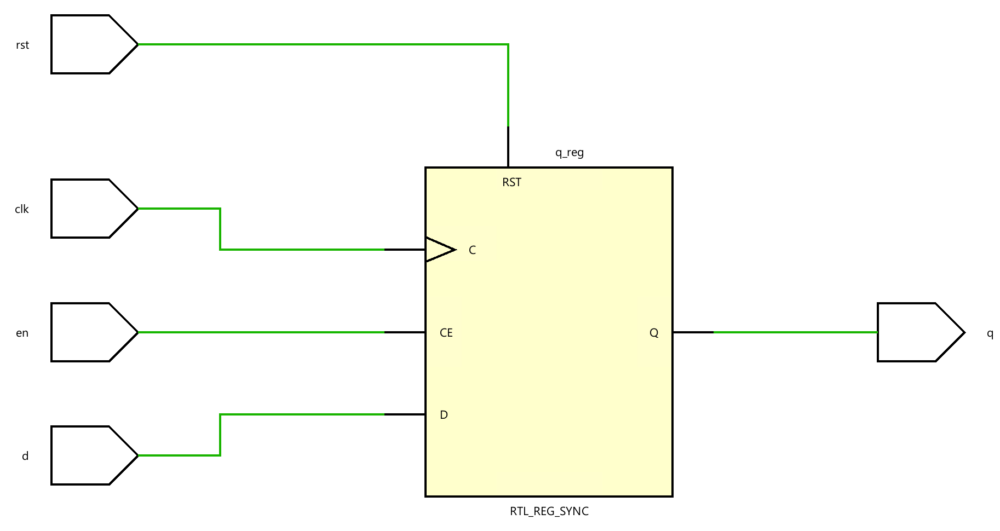
- Develop a testbench to test (see waveform above), perform behavioral simulation for 100ns, and validate the design.
tb.v
module tb;
// Inputs
reg D;
reg clk;
reg rst;
reg en;
// Outputs
wire q;
// Instantiate the Unit Under Test (UUT)
d_ff_sync_reset_en uut (
.clk(clk),
.d(D),
.en(en),
.rst(rst),
.q(q)
);
initial begin
// Initialize Inputs
D <= 0;
clk <= 0;
rst <= 0;
en <= 0;
#20;
D <= 1;
#40;
en <= 1;
#15;
en <= 0;
#30;
D <= 0;
#20;
rst <= 1;
#20;
rst <= 0;
end
always #10 clk = ~ clk;
endmodule
We can run a Simulation to check the code by clicking the Run Simulation under the SIMULATION and choosing the first Run Behavioral Simulation.
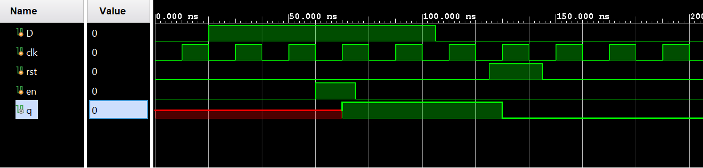
Part5-2-5
Another kind of flip-flop, called T or Toggle, is used to implement clock divider circuits in digital circuits. It can be used to divide the input by 2. If more than one T flip-flop is cascaded, then the clock division can be 2 powers of the number of flip-flops used. The T flip-flop has a T input (data), a clock input, and optionally reset and enable control signals.
module clock_divider_behavior(input Clk, output reg Q);
always @(negedge Clk)
Q <= ~Q;
endmodule
The T flip-flop can also have a control signal called CE (clock enable), which will allow clock division to take place only when it is asserted. The following code models the functionality of the T flip-flop that is sensitive to a falling edge of the clock and has active-low reset and active-high T control signals.
module T_ff_enable_behavior(input Clk, input reset_n, input T, output reg Q);
always @(negedge Clk)
if (!reset_n)
Q <= 1'b0;
else if (T)
Q <= ~Q;
endmodule
Model a T flip-flop with synchronous negative-logic reset and clock enable using the above code. Assign T input to SW0, reset_n to SW1, Clk to SW15, and output Q to LED0. Verify the design in hardware.
lab5_2_5.v
module T_ff_enable_behavior(input Clk, input reset_n, input T, output reg Q);
always @(negedge Clk)
if (!reset_n)
Q <= 1'b0;
else if (T)
Q <= ~Q;
endmodule
- View the schematic of the synthesized design
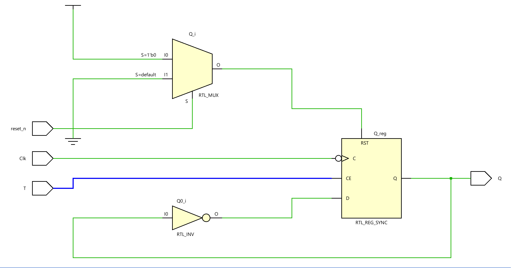
- Develop a testbench to test (see waveform above), perform behavioral simulation for 100ns, and validate the design.
tb.v
module tb;
// Inputs
reg en;
reg clk;
reg rstn;
// Outputs
wire q;
// Instantiate the Unit Under Test (UUT)
T_ff_enable_behavior uut (
.Clk(clk),
.T(en),
.reset_n(rstn),
.Q(q)
);
initial begin
// Initialize Inputs
clk <= 0;
rstn <= 0;
en <= 0;
#20;
rstn <= 1;
#40;
en <= 1;
#15;
#30;
#20;
rstn <= 1;
#20;
rstn <= 0;
end
always #10 clk = ~ clk;
endmodule
We can run a Simulation to check the code by clicking the Run Simulation under the SIMULATION and choosing the first Run Behavioral Simulation.
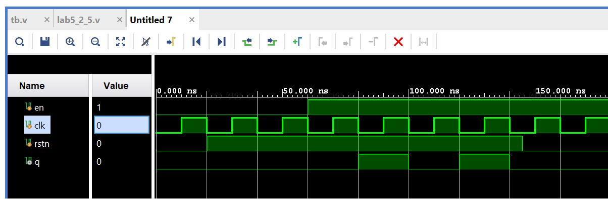
Conclusion
In this lab, you learned the functionality of various kinds of latches and flip-flops. You modeled and verified the functionality of these components. Xilinx also provides some basic latches and flip-flops library components which a designer can instantiate and use instead of writing a model. Writing a model provides portability across vendors and technologies whereas instantiating library components enables a quick use of a component without re-inventing the wheel.